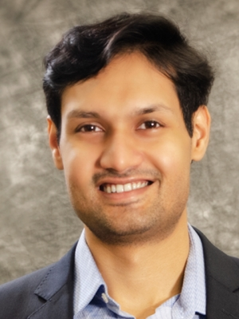
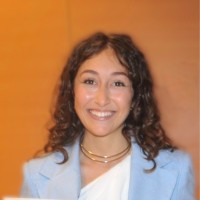
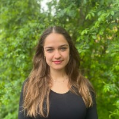

Parth Chansoria
Principal Investigator
Currently hosted in the Regenerative and Muscle Biology Lab at ETHZ
Team

Principal Investigator
PhD Student

Master’s Student

Master’s Student
Affiliation: ETH Zurich
Co-supervised with: Prof. Ori Bar-Nur
Topic: Developing a hydrogel-based in vitro model to assess and improve migration and engraftment of transplanted muscle stem cells.
Affiliation: ETH Zurich
Co-supervised with: Prof. Marcy Zenobi-Wong
Topic: Human Lactation-on-a-Chip: In vitro systems to study the relationship between maternal diet and human milk composition.
Affiliation: ETH Zurich
Co-supervised with: Prof. Marcy Zenobi-Wong
Topic: Modeling zonal organization in articular cartilage using modulated Filamented Light printing for microarchitecture control.
Affiliation: ETH Zurich
Co-supervised with: Prof. Ori Bar-Nur
Topic: Modeling muscle sarcopenia and screening potential therapeutics to boost longevity.
Co-supervised with: Prof. Ori Bar-Nur
Topic: Developing light-inducible 3D muscle constructs for disease modeling and therapeutic applications.